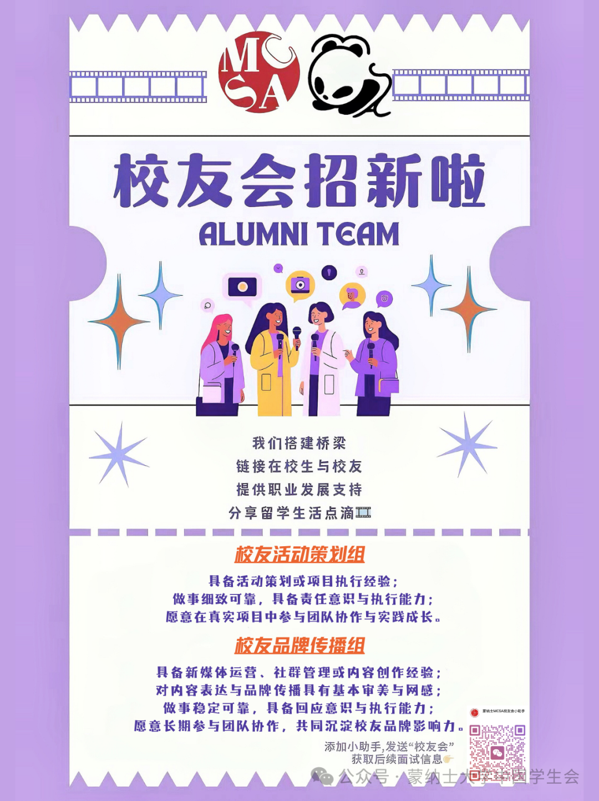
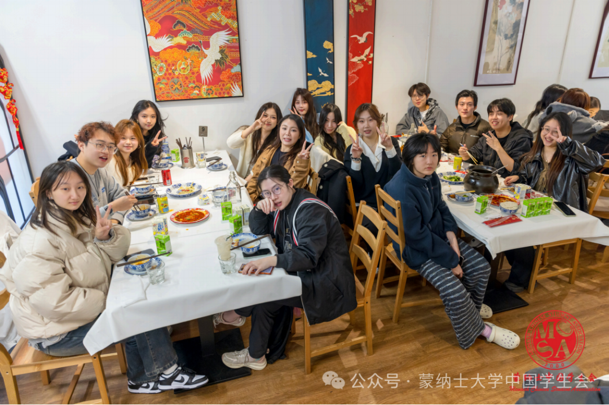
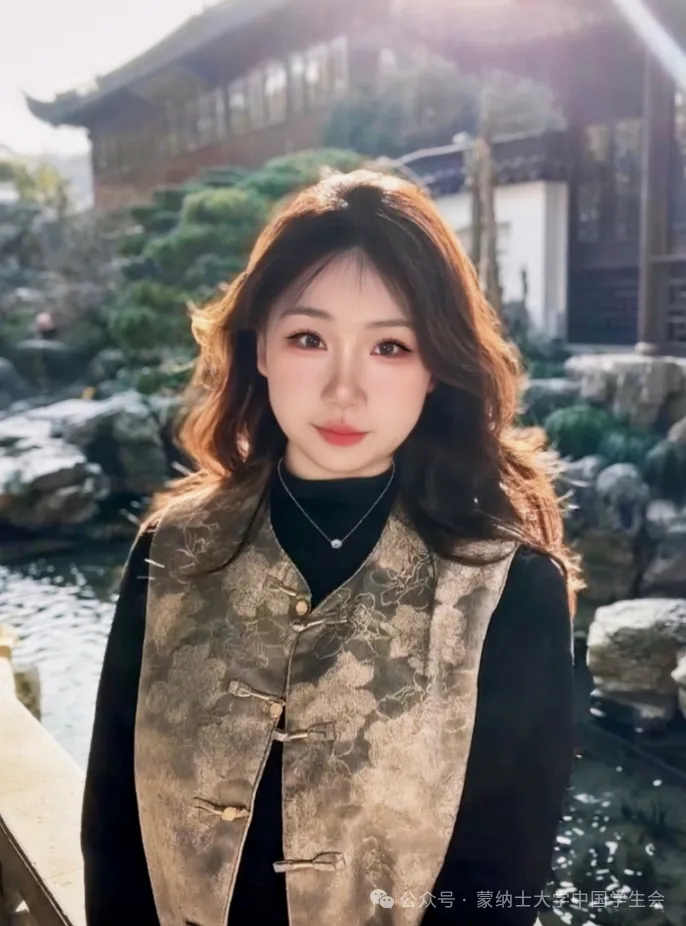
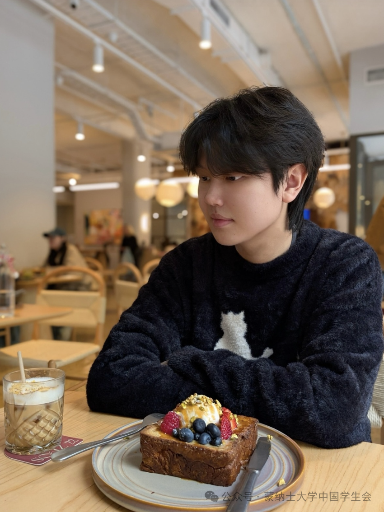
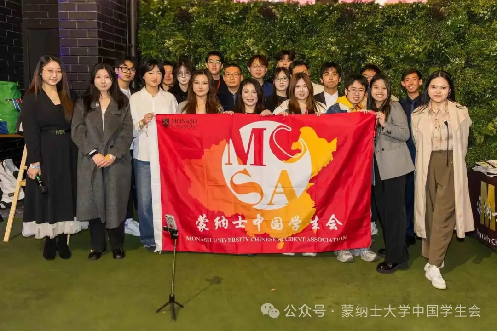
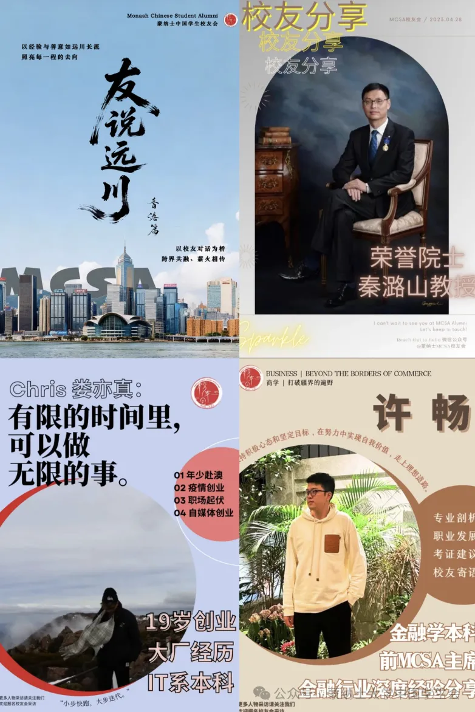
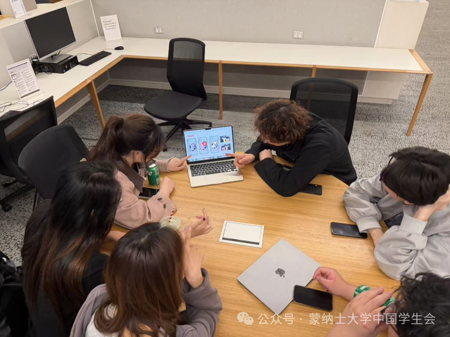
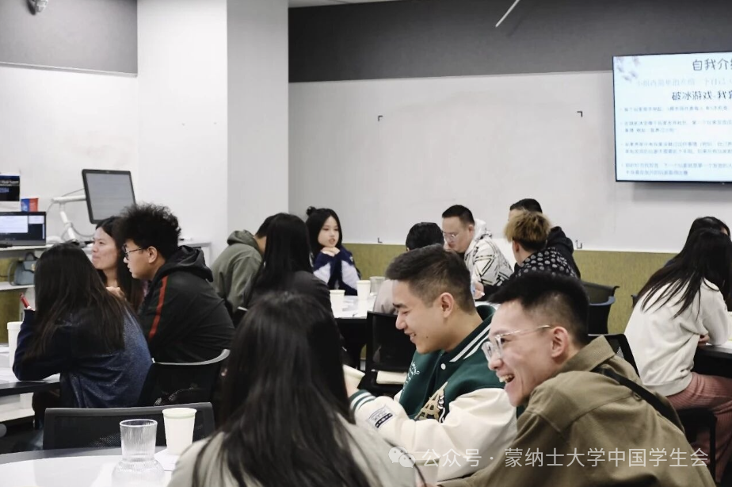
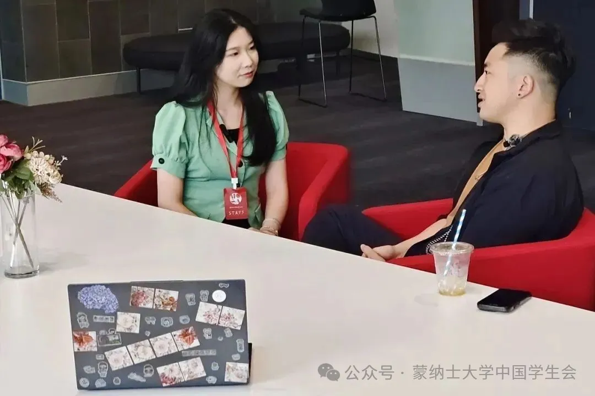
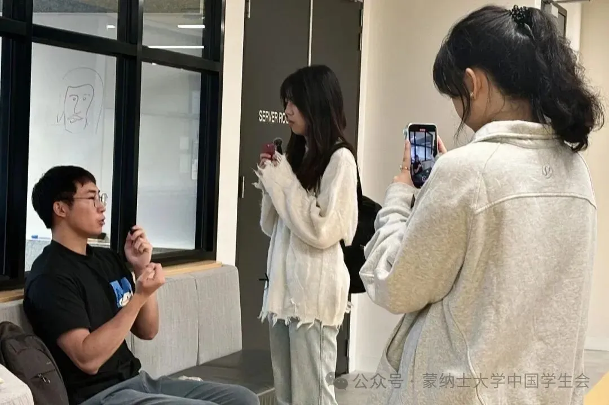

校友会
连接校园与校友 · 一起遇见更多可能
本页记录2026年招新资料。2月26日至3月15日的报名已结束，后续安排请以官方微信公众号通知为准。
关于我们

从校园活动的参与者，到连接校友的伙伴，再到落实创意的执行者，成长始于一次新的尝试。
在MCSA校友会，你会遇见来自不同专业与行业的前辈。通过活动策划和项目实践，建立长期联系，也让自己的能力逐渐被看见与信任。
这里有行业交流、真实项目，也有一起成长的伙伴。让校园与更广阔的世界，在一次次相遇中连接。
部长寄语
部长
盛一禾 Chloe

好客山东出品 | ENFP | 传媒大三在读 自我介绍加载中… 隐藏属性过于丰富，建议线下解锁 🌹 期待有远见、有好奇心的你加入，和我们一起遇见更多可能❤️
副部长
王子威 Keith

于道各努力，千里共同风！ 在人生的道路上，我们都要各自尽我们最大的努力。即使我们相隔千里，但是相同的理想和愿望会让我们前进的道路是一致的。 虽不同舟，但你我初心未变！
以上职务、年级与寄语摘自所提供的2026年招新资料。
部门核心小组
校友活动策划组
从一个想法，到一次真正的相遇
- 参与墨尔本本地校友交流与国内大型校友酒会的筹备和执行。
- 讨论主题、设计流程，沟通校友与嘉宾，协调邀请及现场执行。
- 活动结束后复盘，记录经验，为下一次活动积累方法。
校友品牌传播组
让有价值的故事，遇见更多人
- 运营校友社群，传播活动信息，回应需求并维护互动氛围。
- 策划活动推文与回顾，运营小红书等平台账号。
- 参与视频剪辑、视觉设计、活动记录与「友说远川」等校友品牌栏目。
参与方向与加分项
招新资料所载：超过20个校友社群，连接3000+校友。
校友活动策划组
这些经验有助于上手
- 活动策划、项目执行或团队协作经验，有助于更快上手。
- 细致可靠，重视时间管理，愿意主动承担责任并推进事项。
- 愿意参与真实项目，在实践中提升组织与策划能力。
校友品牌传播组
这些经验有助于上手
- 新媒体运营、社群管理或内容创作经验是加分项。
- 对内容表达有基本审美与网感，做事可靠，有回应意识与执行习惯。
- 愿意长期参与团队协作，一起积累校友品牌影响力。


在校友会的一学期
一起讨论下一场校友活动的主题、流程和分工，把微信群里的头像变成线下见面的朋友。
维护校友社群，传递活动与实用信息，倾听反馈，把信息送到需要的人手中。
采访校友、记录活动、制作推文与视频，在交流中了解行业、工作与真实生活。
活动后聚餐庆功，期末一起复习，闲时做饭、桌游和聊天。收获经验，也收获并肩走过大学时光的朋友。




福利待遇
项目经验
把活动策划与内容成果放进简历和作品集，用真实经历讲述自己的成长。
跨行业交流
与人力资源、互联网、金融、传媒等领域校友交流，了解简历、升学与职业路径。真实经历提供参考，而非标准答案。
更多实践机会
招新资料提及国际志愿活动与官方证书机会，具体安排以活动通知为准。
一起成长的伙伴
从项目协作到聚餐桌游，在日常相处中结识志同道合的朋友。
加入校友会
本页记录2026年招新资料。2月26日至3月15日的报名已结束，后续安排请以官方微信公众号通知为准。
原招新轮次：2026年2月26日至3月15日（墨尔本时间），每人最多报名两个部门。原报名方式为添加「蒙纳士MCSA校友会小助手」，发送“校友会”。面试以交流为主，请提前准备个人简历。新一轮招新请查看官方最新通知。
查看微信招新原文 ↗